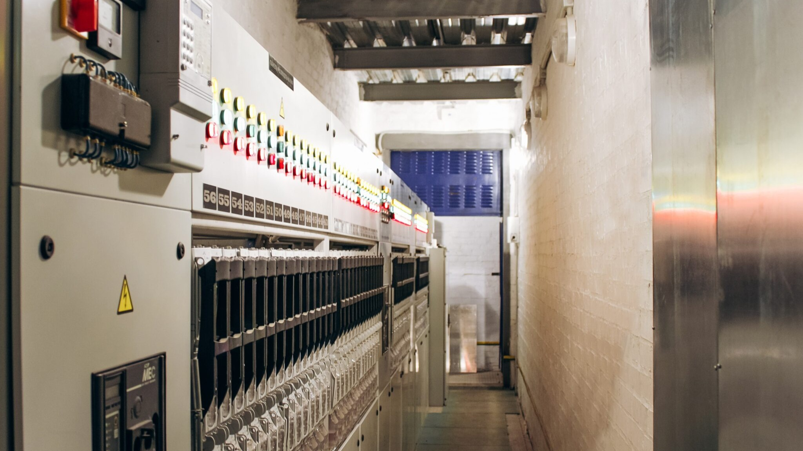
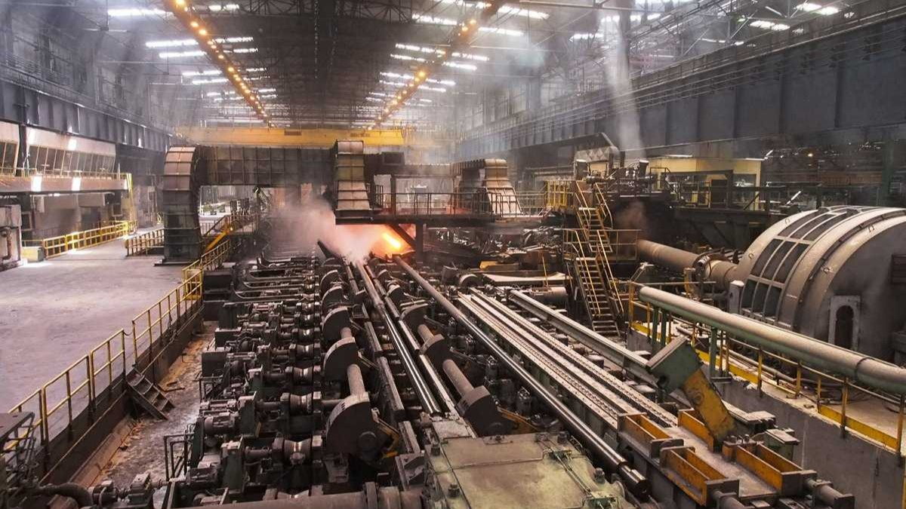

Трансформаторна підстанція (ПС) «Лівобережна» 35/10 кВ є критично важливим об’єктом енергетичної інфраструктури, що забезпечує безперебійне живлення потужностей Дніпровського заводу спеціального машинобудування та тунельних систем «ДНІПРОСПЕЦТЕХМАШ». Будучи закритим об’єктом енергозабезпечення, підстанція спроєктована з урахуванням специфіки енергоємного виробництва, характерного для важкого машинобудування та створення складних металоконструкцій. Вона трансформує напругу з магістральних 35 кВ у розподільчу мережу 10 кВ, яка безпосередньо живить цехи з виготовлення щитових прохідницьких комплексів, тюбінгів та спеціалізованого обладнання для будівництва тунелів. Оскільки завод є єдиним споживачем цієї ПС, її конфігурація дозволяє гнучко регулювати потужність залежно від виробничого циклу підприємства — від енергозатратних процесів плавлення та зварювання спецсталей до випробувальних стендів готової продукції. Високий ступінь автоматизації «Лівобережної» гарантує стабільність напруги, що критично важливо для точних верстатів із програмним керуванням, які використовуються у створенні прецизійних деталей підземних інженерних систем. Підстанція була введена в експлуатацію у 2019 році після повної реконструкції енергетики підприємства.
Функціонування підстанції нерозривно пов’язане зі стратегічною діяльністю материнської компанії — державного АТ «ДНІПРОСПЕЦПРОЕКТ», що є провідним гравцем у сфері проєктування підземної інфраструктури. Енергія, що проходить крізь ПС «Лівобережна», фактично матеріалізується у складних залізничних та автомобільних тунелях, станціях метрополітену та метротраму, а також у сучасних захисних спорудах цивільного захисту. Профіль АТ вимагає від заводу-виробника випуску унікальної номенклатури: від елементів кріплення глибокого закладення до інженерного обладнання напівпідземних підстанцій та укриттів. Завдяки надійному енергопостачанню, завод реалізує повний цикл — від проектного креслення фахівців «ДНІПРОСПЕЦПРОЕКТУ» до виготовлення готових залізобетонних та металевих сегментів підземних споруд. Таким чином, «Лівобережна» 35/10 кВ виступає енергетичним фундаментом для розвитку залізничної підземної інфраструктури державного значення, дозволяючи втілювати найскладніші інженерні рішення в умовах високих навантажень та специфічних вимог до безпеки об’єктів критичного призначення.

